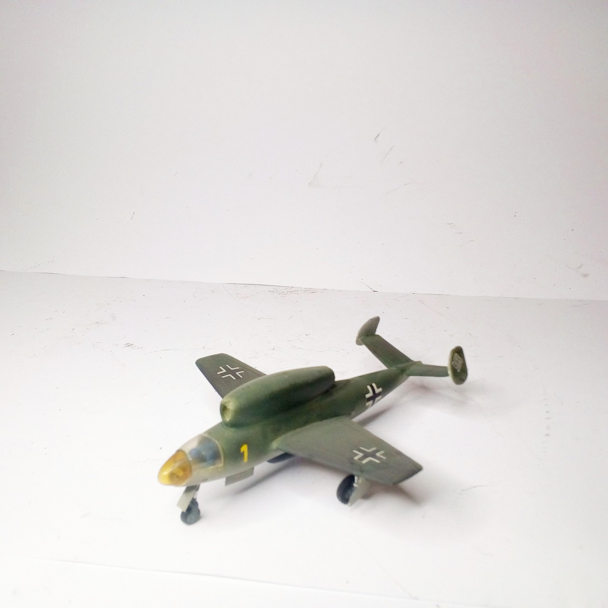
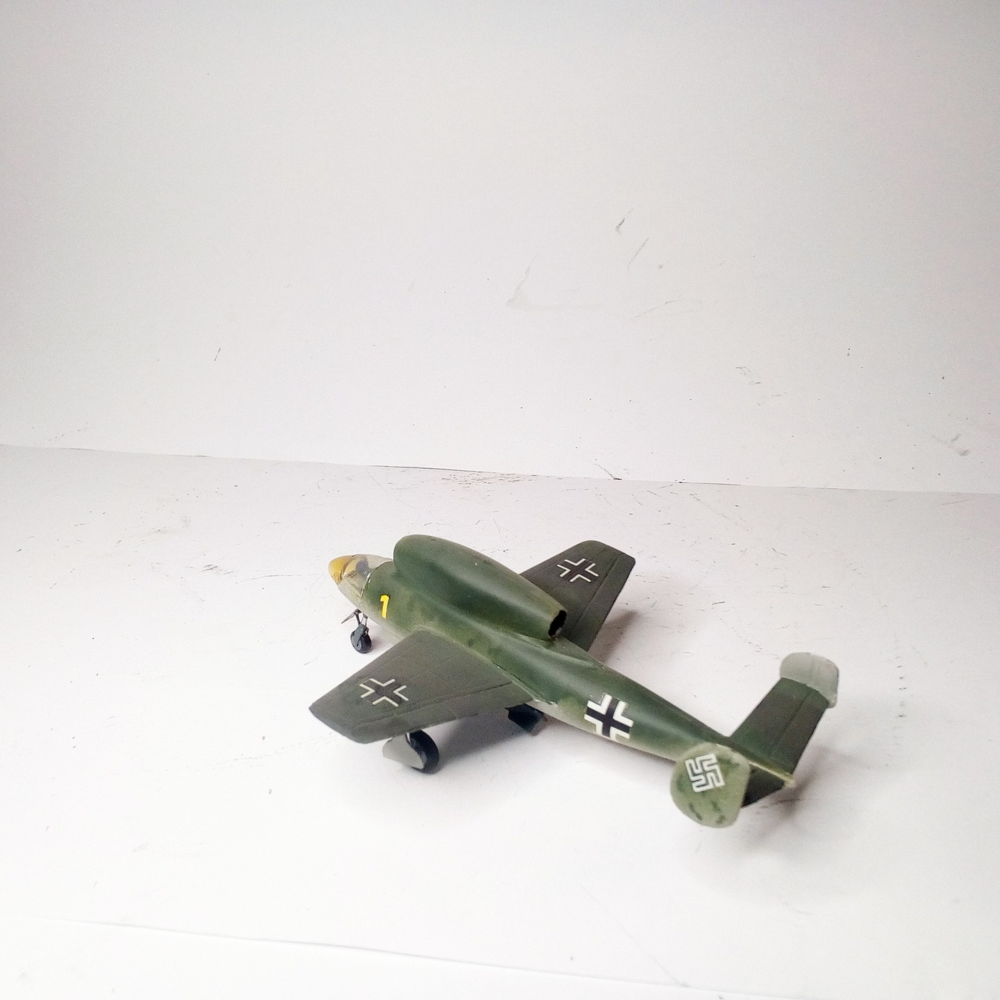

Aerei · scale model archive
Henschel Hs132
Henschel Hs132 — Kit: Airmodel vacform. Scale 1/72 Project of a jet dive bomber, pilot flying it in a prone position #1/72 #Airmodel

Photo gallery

English description
Scale 1/72
Project of a jet dive bomber, pilot flying it in a prone position
#1/72 #Airmodel
Descrizione italiana
Progetto di una jet dive bombardiere, pilota flying lo in una prone position.